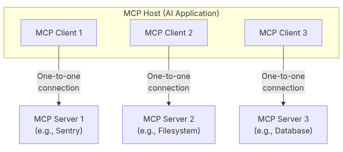
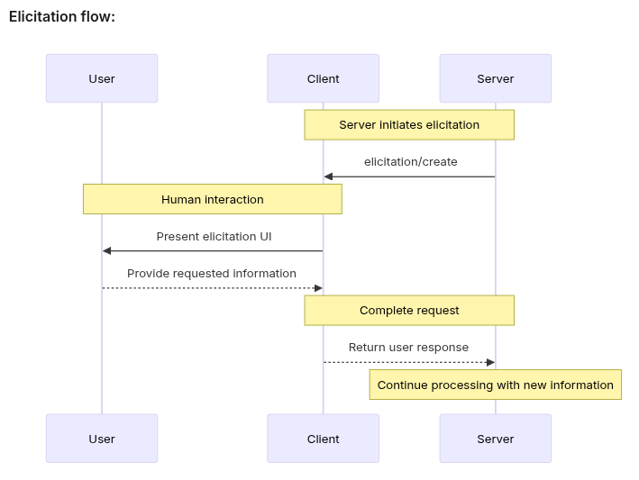

MCP & MCP-B
A concise guide and practical walkthrough
Presentation by Stoica Tedy & Frunza Dan
e^iπ = -1
What is MCP?
Model Context Protocol (MCP) is an open standard that connects AI hosts (clients) to context providers (servers).
- Expose tools, resources and prompts to AI applications.
- Enables assistants to access data and perform actions securely.
- Think of MCP as a standardized "port" for AI apps to reach external capabilities.
MCP Diagram

Why MCP matters
- Reduces integration complexity for AI apps and tools.
- Enables rich, real-time, permissioned interactions (e.g., calendar, files).
- Supports local and remote servers (desktop, cloud, browser).
Architecture (high level)
MCP splits concerns into two layers:
- Data layer — JSON-RPC based primitives, lifecycle, discovery, execution.
- Transport layer — connection/authorization (stdio, streamable HTTP, tab transports).
Architecture Diagram

Data Layer
The Data layer defines the protocol primitives and JSON-RPC surface:
- Lifecycle: initialize / shutdown and capability negotiation.
- Discovery: list methods for tools/resources/prompts and schema-driven metadata.
- Execution: call/read/task APIs that return structured content and typed outputs.
- Schema-first: inputs/outputs should be expressed as JSON Schema for validation and safe execution.
Key participants
- MCP Host: AI application (e.g., Claude, VS Code) that coordinates clients.
- MCP Client: component inside the host that talks to servers.
- MCP Server: provides tools, resources, and prompts.
Server Primitives
Server-facing primitives exposed over the Data layer (concise):
- Tools: executable functions. Provide
name,description,inputSchema,outputSchemaand ahandler. Handlers return typed structured outputs and acontentarray for host rendering. - Resources: addressable context (id, mediaType) with
read()semantics; support streaming, ranges and metadata for efficient transfer. - Prompts: reusable templates with slots and recommended sampling/hyperparameters
Server primitive — Tool
searchFlights — inputSchema and response:
{
"inputSchema": {
"type": "object",
"properties": {
"origin": { "type": "string" },
"destination": { "type": "string" },
"date": { "type": "string", "format": "date" }
},
"required": ["origin", "destination", "date"]
},
"response": {
"flights": [{ "id": "str", "price": "number", "depart": "string", "arrive": "string", "airline": "string" }],
"total": "number"
}
}Server primitive — Resource
calendar://events/2024 — example descriptor:
{
"uri": "calendar://events/2024",
"mimeType": "application/json",
"description": "User calendar events for 2024",
"supports": ["read","subscribe"]
}Server primitive — Prompt
plan-vacation — example prompt descriptor:
{
"name": "plan-vacation",
"title": "Plan a vacation",
"description": "Guides a user through planning a vacation",
"arguments": [
{ "name": "destination", "type": "string", "required": true },
{ "name": "duration", "type": "number" },
{ "name": "budget", "type": "number" }
]
}Prompts run structured workflows: user chooses prompt, supplies arguments, client orchestrates tools/resources.
Client primitives
- Sampling: clients may supply generation settings (temperature, top_p, n) when invoking prompts/tools to control model behavior.
- Elicitation: clients orchestrate multi-turn prompting, few-shot contexts, and instrument prompts (examples, anchors) to improve reliability.
- Logging: clients should record requests, approvals/denials, decisions and structured outputs for audit, debugging and replay.
Client example — Elicitation
Server requests input from user (example):
{
"jsonrpc": "2.0",
"method": "elicitation/requestInput",
"params": {
"message": "Please confirm your Barcelona vacation booking details:",
"schema": {
"type": "object",
"properties": {
"confirmBooking": { "type": "boolean", "description": "Confirm the booking (Flights + Hotel = $3,000)" },
"seatPreference": { "type": "string", "enum": ["window","aisle","no preference"] }
},
"required": ["confirmBooking"]
}
}
}Elicitation example

Client example — Sampling
Server asks client to perform an LLM completion on its behalf:
{
"jsonrpc": "2.0",
"method": "sampling/complete",
"params": {
"messages": [ { "role": "user", "content": "Analyze these flight options and recommend the best choice:\n[47 flights]" } ],
"modelPreferences": { "hints":[{"name":"claude-sonnet-4-20250514"}], "costPriority":0.3, "speedPriority":0.2, "intelligencePriority":0.9 },
"maxTokens": 1500
}
}Sampling example

Client example — Logging
Server emits logs to the client for debugging/monitoring:
{
"jsonrpc": "2.0",
"method": "logging/log",
"params": {
"level": "info",
"message": "Tool executed: searchFlights",
"meta": { "tool": "searchFlights", "requestId": "abc123" }
}
}Lifecycle & discovery
Initialization negotiates protocol version and capabilities; discovery uses list methods (tools/list, resources/list).
Notifications (e.g., tools/list_changed) enable real-time updates.
Notifications
Notifications provide real-time updates from servers to clients/hosts:
- Common events:
tools/list_changed,resources/changed,tasks/updated,prompts/updated. - Transports may deliver notifications via SSE, message frames, or in-process callbacks.
- Notifications should include stable IDs and minimal payloads to enable efficient reconciliation.
Transport Layers
Transports carry JSON-RPC messages; choose based on locality, auth and streaming needs:
- Stdio — local IPC, low-latency; avoid writing RPC to stdout and use stderr/files for logs.
- Streamable HTTP — use bearer/OAuth for auth; support SSE or chunked streaming for long-running responses.
Tool execution flow (example)
- Client calls
tools/callwith tool name and arguments. - Server validates against tool input schema and executes.
- Server returns
contentarray + structured output for the host.
Tool execution — example (JSON-RPC)
// 1) initialize (client -> server)
POST /initialize
Content-Type: application/json
{
"jsonrpc": "2.0",
"method": "initialize",
"params": { "client": "my-host", "capabilities": {} },
"id": 1
}
// 2) discover tools
POST /request
Content-Type: application/json
{
"jsonrpc":"2.0",
"method":"tools/list",
"params": {},
"id": 2
}
// 3) call a tool
POST /request
Content-Type: application/json
{
"jsonrpc":"2.0",
"method":"tools/call",
"params": { "name": "searchFlights", "args": [], "kwargs": { "origin": "NYC", "destination": "BCN", "date":"2025-06-15" } },
"id": 3
}
Tasks (new feature)
Long-running or asynchronous work is modeled as tasks:
- Create/claim/workflow endpoints: `tasks/create`, `tasks/status`, `tasks/cancel`.
- Support status updates, progress, result delivery (polling or streamed notifications).
- Tasks enable durable work across restarts and multi-step operations with retry semantics.
Build an MCP server
- Define tools/resources/prompts and JSON Schemas for inputs/outputs.
- Choose transport (stdio for local, HTTP for remote, Tab for browser).
- Expose lifecycle handlers and implement tools with clear error handling & logging.
Tip: use the FastMCP SDK to auto-generate tool definitions from type hints.
Build an MCP server — example (Python)
from fastmcp import FastMCP
mcp = FastMCP(name="demo-server")
@mcp.tool(name="add")
def add(a: int, b: int) -> int:
"""Add two integers"""
return a + b
@mcp.tool(name="get_wade")
def get_wade() -> str:
# simple demo: fetch and return page HTML (sync for brevity)
import requests
r = requests.get("https://example.com/wade")
return r.text
if __name__ == '__main__':
# choose transport: stdio for local, or streamable-http for remote
mcp.run(transport='stdio')
Build an MCP client
- Create a ClientSession over the chosen transport and call
initialize. - Use
tools/listto discover capabilities and register them with the host. - Route tool calls from the LLM through the client to the appropriate server.
Build an MCP client — example (Python)
from mcp.client import ClientSession
sess = ClientSession(transport='stdio')
sess.initialize(client_name='demo-host')
# discover tools
tools = sess.call('tools/list')
print('Available tools:', tools)
# call a tool
resp = sess.call('tools/call', { 'name': 'add', 'kwargs': { 'a': 2, 'b': 3 } })
print('Result:', resp)
Connect to local MCP servers
Common flow (e.g., Claude Desktop): configure a local server in client settings so it launches and attaches via stdio.
Ensure safe defaults: restrict directories, review approvals, and avoid stdout logs for stdio servers.
Connect to remote MCP servers
- Use streamable HTTP transport and standard auth (bearer tokens, OAuth).
- Enable server-sent events (SSE) for streaming responses where needed.
Security & permissions
- Authenticate transports (OAuth or tokens) for remote servers.
- Require explicit user approval for sensitive actions (file access, send email).
Example: curl with bearer token for a protected streamable HTTP MCP server:
curl -X POST https://mcp.example.com/request \
-H 'Authorization: Bearer $MCP_TOKEN' \
-H 'Content-Type: application/json' \
-d '{"jsonrpc":"2.0","method":"tools/call","params":{"name":"sensitiveOp","kwargs":{}},"id":42}'WebMCP / MCP‑B (browser-native)
WebMCP exposes website functions via navigator.modelContext; MCP‑B provides the browser reference implementation and extension.
- Zero-backend option: run in-page, tools inherit the user's session & permissions.
- Useful for in-page automation (add-to-cart, form helpers) with human-in-the-loop control.
How WebMCP / MCP‑B works
- Install
@mcp-b/global(polyfill) or use the WebMCP API. - Register tools (JS functions) with
registerTool(). - AI agents discover and call tools via the MCP‑B extension or assistant bridges.
Quick WebMCP example
// in-page WebMCP example
import '@mcp-b/global'
import { z } from 'zod'
registerTool({
name: 'add_to_cart',
description: 'Add product to cart using current session',
inputSchema: z.object({ productId: z.string(), quantity: z.number().min(1).default(1) }),
async handler(ctx, args) {
// use fetch with user's cookies/session
await fetch(`/cart/add`, { method: 'POST', credentials: 'include', body: JSON.stringify(args) })
return { success: true }
}
})
// client (assistant) will call via MCP‑B bridge/extension
Developer tools
MCP Inspector and SDK tools help debug initialization, list responses and tool execution flows.
Demo
We have a demo that shows a running MCP server and a client interaction.
python3 presentation/mcp_server.py
# then call (example):
curl -s -X POST http://localhost:8765/invoke \
-H 'Content-Type: application/json' \
-d '{"function":"get_wade","args":[]}'